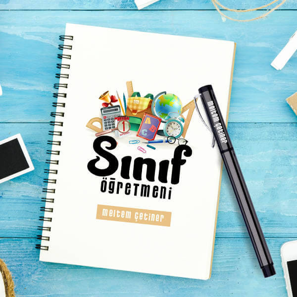
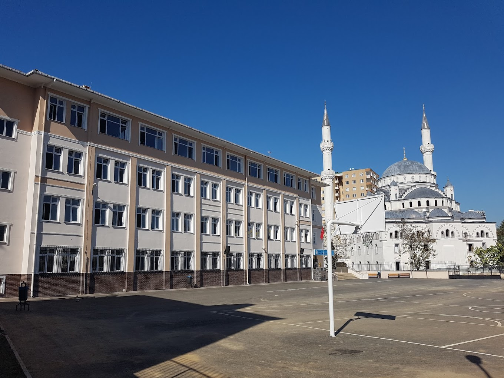
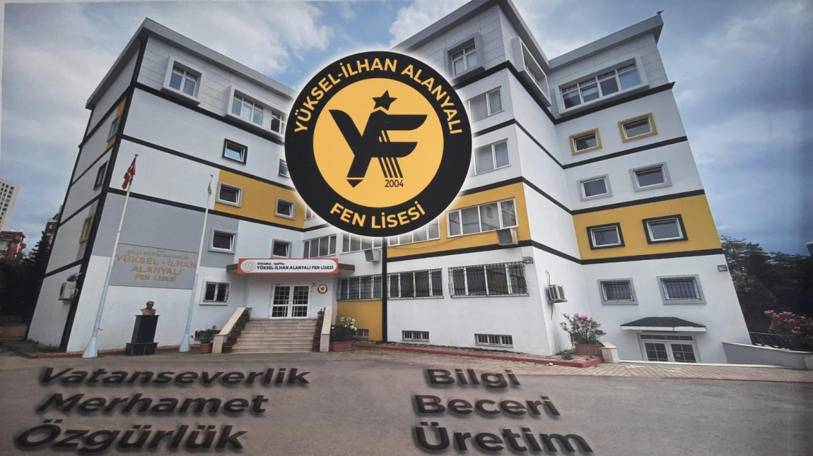
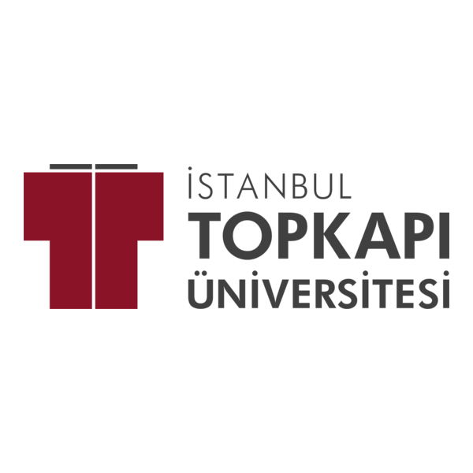

İlkokul Yıllarım (2011)

2011 yılında eğitim hayatıma Ercan Görür İlköğretim Okulu’nda başladım. Bu okul, öğrenmeye ilk adımımı attığım yerdi. O yıllarda derslere olan ilgimle birlikte okula alışma sürecim oldukça doğal ve sade geçti. Özel olarak aklımda kalan bir anım ya da beni derinden etkileyen bir olay olmasa da, bu dönem temel eğitimimi aldığım ve okul disiplinini tanımaya başladığım önemli bir basamaktı.
Ortaokul Yıllarım - Şehit Koray Karaca İmam Hatip Ortaokulu (Kartal)

Ortaokul eğitimimi Kartal'da bulunan Şehit Koray Karaca İmam Hatip Ortaokulu'nda tamamladım. Bu dönemde, birçok öğretmenim beni derinden etkiledi ve eğitim hayatımda önemli bir yer edindiler. Özellikle ahlaki ve milli değerlerimi şekillendiren öğretmenlerim oldu. Milli duygularımın güçlendiği ve insanlığı daha derinden hissettiğim bu dönemde, özellikle Sosyal Bilgiler öğretmenim, Türk milletinin geçmişine, değerlerine ve inançlarına olan bağlılığımı pekiştirdi. O zamanlarda Türk milletinin tarihini ve Türk ve dinin ayrılmaz bir bütün olduğunu öğrendim.
Ortaokulda matematik benim en fazla ilgilendiğim alandı. Matematiksel düşünme biçimi, problem çözme yeteneğim ve analitik bakış açım, bu dönemde şekillenmeye başladı.
Lise Yıllarım – Yüksel İlhan Alanyalı Fen Lisesi (2019)

2019 yılında başladığım Yüksel İlhan Alanyalı Fen Lisesi, yalnızca akademik gelişimime değil, aynı zamanda hayata bakış açıma da derin katkılar sağladı. Bu dönemde, hayatın gerçekleriyle daha somut bir şekilde yüzleşmeye başladım. İstikbali yüksekten görenlerle bir arada olmak, benim de hayallerimi ve hedeflerimi büyüttü.
Burada insanların ne için emek verdiğini, neyin peşinden koştuklarını daha iyi anladım. Kimisi vatanı için, kimisi ailesi, kimisi ahireti veya kişisel idealleri için çabalıyordu. Ve tüm bu farklı yolculukların ortak noktası; geleceğe odaklanmaktı. Öğretmenlerimiz de sadece ders anlatan değil, zamanını eğitime ve öğrencilerine adamış, ahlaki duruşlarıyla örnek olan kişilerdi. Fikir çatışmalarında saygı çerçevesinde tartışma ortamı oluşur, düşünceler sentezlenirdi.
Fen lisesi olarak laboratuvar dersleri ve bilgisayar dersleri ilgimi en çok çeken alanlardı. Ayrıca model uçak kursuna da katıldım fakat ne yazık ki pandemi nedeniyle bu kurs yarım kaldı. Pandemide geçen 1,5 yıl, benim için büyük bir kayıptı; sosyal, akademik ve kişisel gelişim açısından önemli bir boşluk bıraktı.
Üniversite Yıllarım – İstanbul Topkapı Üniversitesi (2023)

2023 yılında İstanbul Topkapı Üniversitesi Bilgisayar Mühendisliği (İngilizce) bölümüne başladım. İlk yılımı İngilizce hazırlık eğitimiyle geçirdim ve şu anda 1. sınıf öğrencisiyim. Üniversite hayatına ilk adım attığımda ortam bana oldukça yabancı gelmişti. Başlarda sistemin beni yönlendirdiği bir dönem yaşadım; ama zamanla bu sistemi ben yönlendirmeye başladım. Bu geçiş, hem kişisel gelişimim hem de bağımsız bir birey olma yolunda önemli bir aşamaydı.
Üniversitenin şu ana kadar bana kattığı en büyük değer; farklı milletlerden insanlarla sohbet etme fırsatı bulmak ve onların dünyaya bakış açılarını görmek oldu. Sosyal çevre anlamında çok geniş bir arkadaş grubum olmadı ama bu konuda daha bilinçli olmam gerektiğini fark ettim.
Hayatım boyunca güzel ve değerli insanlarla birlikte olduğum için toplumda ne kadar yozlaşmış karakterler olabileceğini tahmin etmiyordum. Bu gerçeklikle üniversite hayatımda karşılaştım. Bu gözlem, içimde şu hedefi şekillendirdi: Toplumda nitelikli koltuklara, ahlak ve değer bilinciyle sahip çıkmak. Türkiye, geçmişiyle, ecdadıyla ve İslam’ın kalesi oluşuyla çok önemli bir devlet. Bu kaleyi yaşatmak, korumak ve layıkıyla temsil etmek bizim sorumluluğumuz.